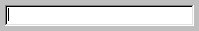

(width = 20, status = "", readonly = false,
font = "", size = "", weight = "", underline = false,
password = false, justify = "LEFT", style = 0,
set = false, mandatory = false, trim = true,
bgndcolor = "", textcolor = "")
FieldControl inherits from EditControl. It creates a single-line Windows "edit" control as below:
The specified width is multiplied by the average character width.
The status parameter allows you to enter text to appear in the status bar when the field has the focus.
If the readonly parameter is true, the field will initially be disabled
The font parameter allows you to enter the font type. This parameter must be specified in order for the size, weight, and underline parameters to take effect.
The size parameter allows you to enter the size of the text in the field.
The weight parameter should be a number from 0 to 1000 where 400 is normal and 700 is bold.
If underline is true, the text in the field will appear underlined.
If password is true, the text will appear as asterisks (*).
The justify parameter allows you to set the alignment of the text.
The window style can be passed by specifying the style in the style parameter.
The set parameter allows you to pass in an initial value.
If the mandatory parameter is true, then the field will be invalid if there is no value.
If trim is true, leading and trailing whitespace will be removed.
See also: EditorControl